鳴沙山‧月牙泉
如果可以的話，還是盡量在晚上七點之前就落腳休息會比較適當，一次騎到晚上十一點還在單車上的夜騎，疲勞感像鬼魂般縈繞在身邊。
騎乘時間過長，不僅是當天體力的消耗量太大的問題，更是明天甚至後天的體力恢復的重大影響。
今天是我在敦煌休息的第二天，睡醒睜開眼睛的瞬間，只覺得身體像鉛條一樣的重，起身都很費力。
這就是代價，但也是一種訓練啦，說不定下次又夜騎的話，身體反應就不會這麼劇烈了。
我的早餐從一碗牛肉麵開始，本來已經說好沒事就不吃牛肉麵了，但是蘭州牛肉麵真的很好吃:P

吃完牛肉麵就是今天另一個開心的行程，要去鳴沙山騎駱駝、月牙泉看美景。
住的地方之便利，走路去可以載我到鳴沙山的3路公車站牌，一樣只要三分鐘，車資很便宜，一塊錢就可以搞定。
因為鳴沙山距離市區比較近，不像莫高窟那麼遠，足足有二十五公里。
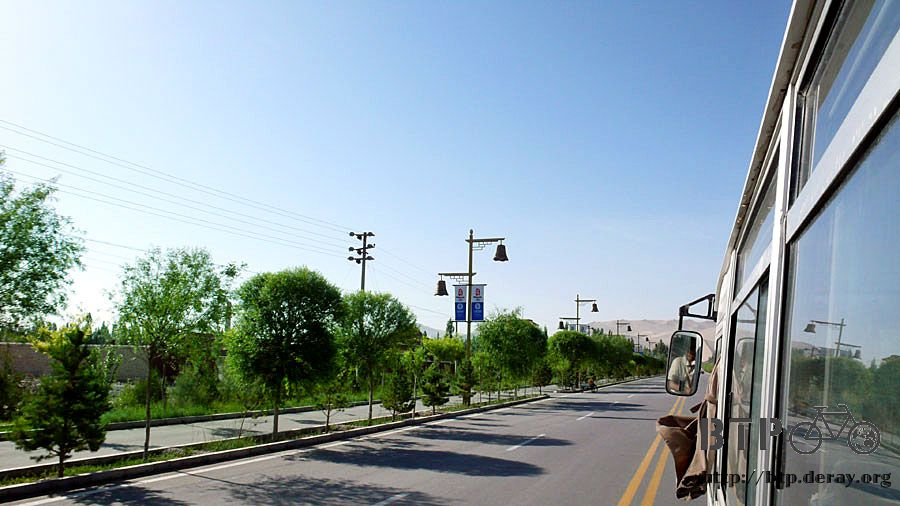
十幾分鐘之後就抵達了，還沒到的時候就看到路的遠方有高聳的沙漠山，美麗的像是虛幻的一樣。

騎了這麼久的車都沒看到我心目中真正的沙漠，如今啪～的一聲突然就出現了！

鳴沙山和月牙泉是在同一個景點，所以只要買一張票就可以了。
現在還不到旺季，一張票是八十元，七月份旅遊的旺季到了之後，票價就變成一百元。
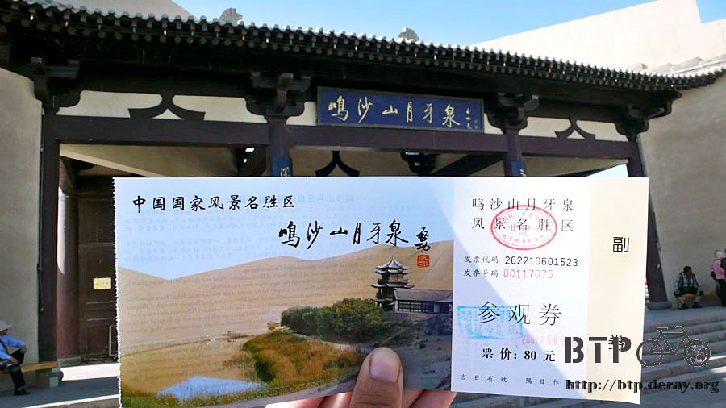
進入大門之後就是沙漠，瞬間炎熱的焚風吹來，高聳又平坦的砂丘一座接連一座，這就是貨真價實的沙漠。


買門票只是消費的剛開始而已，八十元讓你進來，那要怎麼去逛這個沙漠了？

兩個選擇，一：搭砂地摩托車。

二：騎駱駝。
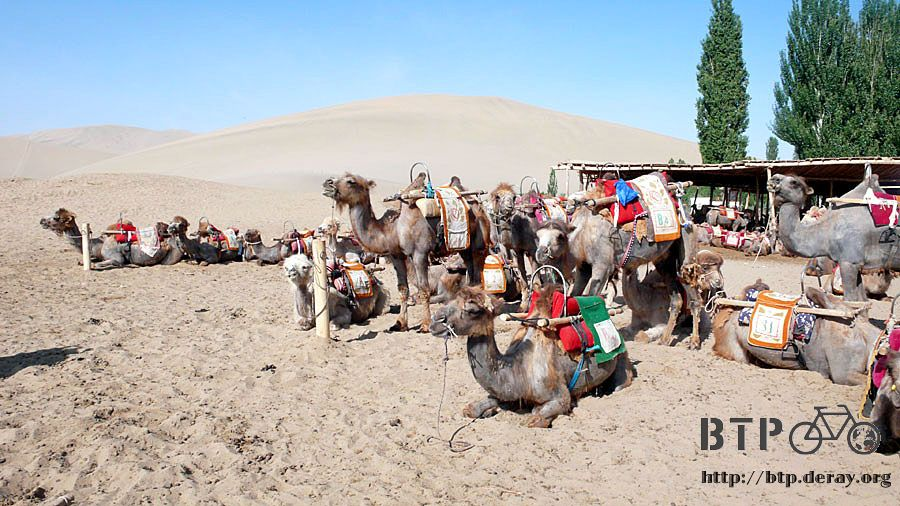
很抱歉不能用走路的，就是這樣，都到這裡了該花的錢就別小氣。
騎駱駝的話，這邊有專門的點可以騎乘，價錢都是公定的，從山門(也就是大門)騎到鳴沙山，然後再騎到月牙泉，再把你載回山門，這樣是六十元。

駱駝休息的地方，地上都是像栗子一樣的東西，不要懷疑，這就是駱駝大便，但是不臭，是草的味道。
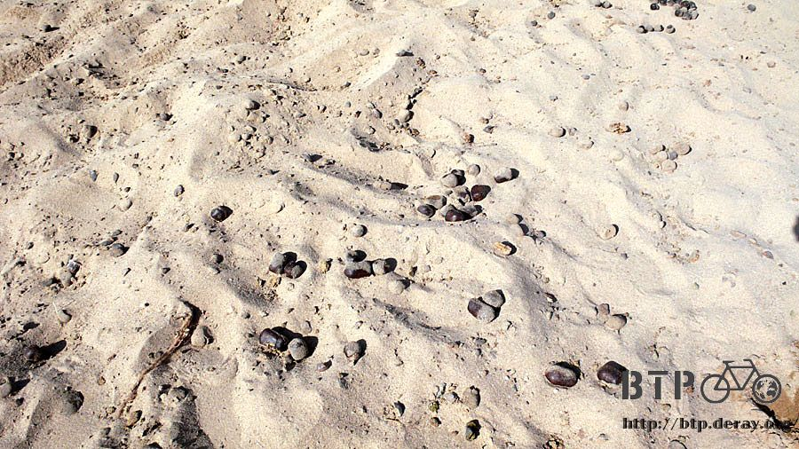
付過錢之後，就會被旁邊的人叫去穿防砂的鞋套，還說我腳怎麼那麼大，得找個外國人的尺寸才穿的下。
細心的幫你穿上鞋套，綁上鞋帶，心裡才覺得這六十元的服務還不錯嘛，他們就跟我說這鞋套是額外租的，要十元。
很機車，都已經穿好了才說這是額外要收錢的，怎麼不在穿之前就先講好。
有點不爽，不是因為錢的問題，而是做生意的模式根本就是用矇騙的，沒什麼職業道德。
穿好鞋套就可以準備騎上駱駝啦，不用怕不會騎駱駝，都會有專人在前面牽著駱駝走。
幫我牽駱駝的人叫作寧稷財，青海人，旺季的時候到這邊打工，淡季就回家陪小孩。
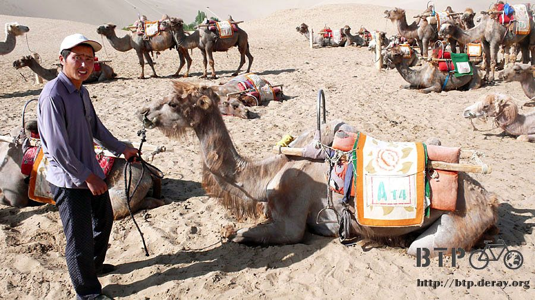
他是一個很好的人，一個人旅行只要有人可以陪我講講話、聊聊天我都會很珍惜。
一般他們都是牽團體的客人，駱駝跟駱駝串在一起，少則五六隻，多則十來隻，像是商隊一樣。
駱駝一年脫毛一次，這麼巧現在正好就是脫毛的季節，所以每一隻都像是長皮膚病一樣，毛都掉光光的樣子很可憐。
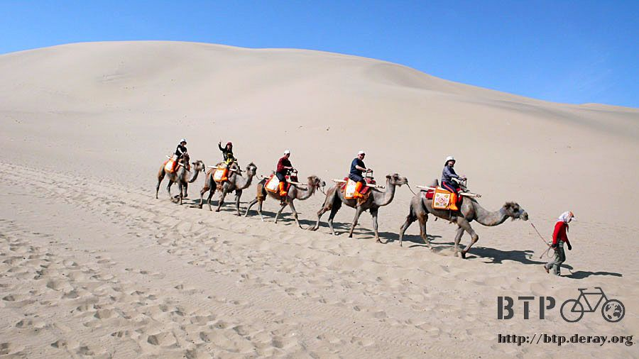
坐上駱駝、套上腳踏環、抓緊把手，但是駱駝每次起身和趴下的時候，都會有一種要被甩飛出去的感覺，很驚嚇。
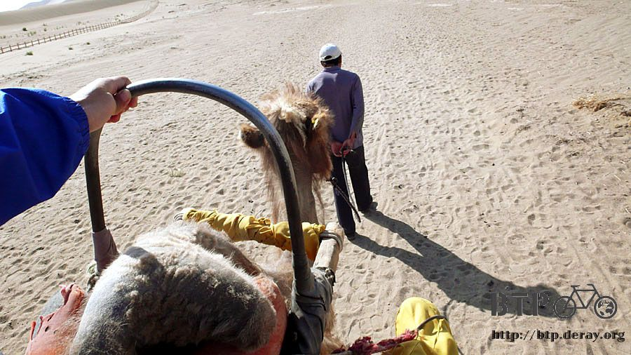
駱駝走路慢慢的，稷財在前面牽著走，這麼熱的天，還要牽著駱駝走沙漠山，又只有我一個客人，真是個辛苦的工作。
別以為這個工作很好賺，月薪的基本工資只有少到超級誇張的三百元人民幣，也就是天天來上班，
從早上五點開始營業，有人那時候來看沙漠日出，到晚上十點半結束營業，因為有人九點多才來看日落，
工作時間長達十七個小時，一天只給你十塊人民幣的薪水。

不用說，靠的就是觀光客打點的小費維生了，我坐在駱駝背上，翻了一下腰包，估算著扣除今天的花費，還能給稷財多少錢？
我先拿一張十元人民幣給稷財，請他先收下，以免錢不知不覺就花光在這裡。
十元真的不多，他陪我走這一趟至少要兩個小時，旺季的時候遊客就算爆滿，一天最多也只能走個八趟。
日本觀光客最大方，都是一百、一百的給小費，也有很小氣的，一毛錢也不給，視為理所當然的服務。

今天是星期一，是個好日子，遊客稀少，玩起來特別開心。
鳴沙山這邊養了將近一千隻的駱駝，數量多的驚人，旺季的時候，一千隻駱駝都不夠用，想騎駱駝得排隊，
可以想像一千隻駱駝在這邊漫步的畫面嗎？如果只有駱駝那想必是很美，但是一堆觀光客就令人倒胃口。

稷財看我坐在駱駝上那麼樣的搖晃不平穩，就教我說手不要握那麼緊，身體放輕鬆一點。
我就是怕掉下去，所以才握那麼緊，結果身體一放軟，跟著駱駝走路的頻率晃動著，反而舒適多了。
一開始剛坐的時候，很像在坐那個西部猛牛機，看能撐幾秒不要被甩下來，現在就算手不用握著把手也可以很安穩的待在駱駝背上。

走了一段路之後，翻過幾個小砂丘，再沿著砂脊走一會，鳴沙山就到了。
這邊可以滑沙，但是想要往下滑，就得用自己的腳先爬上超高的砂丘才行，因為沙漠很鬆軟，腳一踩就陷進去，很難使力。
所以沙丘就放了木頭梯子，讓你有個著力點可以往上爬，大概要爬個三十層樓的高度，氣喘如牛。

爬到頂端就會看到很多滑沙用的小竹板，滑沙的費用是十塊錢，在下面的時候已經付過錢，到上面只要把票給他們就可以了。

往下看斜坡很陡峭，坐上竹板之前還跟自己說等一下不要尖叫，要忍住、要克制、要像個男子漢。
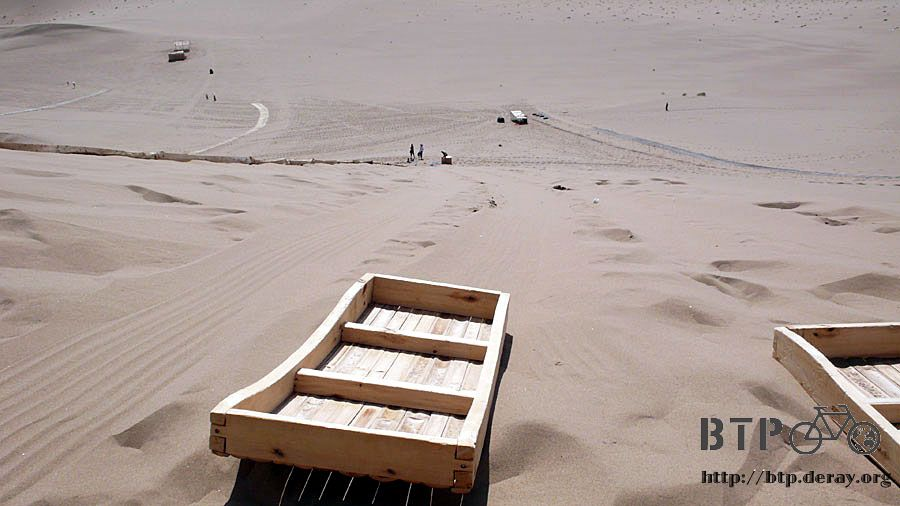
結果我都是多慮的，因為根本就滑不動呀~_~
得自己把雙手插在沙漠裡，然後往後推，這樣才會滑動個五十公分，然後再插到沙漠裡，再往後推，反覆這樣進行。
我那麼辛苦爬上這麼高的沙丘是為了什麼T_T
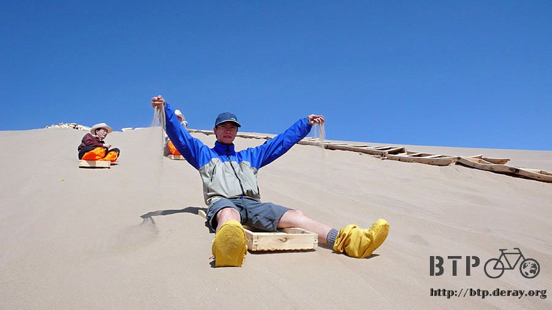
為什麼滑沙還得要自己用手推才會動，不應該是『哇～～！』的一聲就滑到底下那種快感嗎？
沙漠的沙子被太陽曬的又熱又燙，一直反覆把手插在熱沙裡面，突然有種感覺，
『我現在根本就是在練鐵砂掌呀！XD』
辛苦的把自己從頂端慢慢的推下來，竹板交給底下負責收集的人，等收集到一定的數量之後，
他居然要背著這麼多的竹板爬樓梯回頂端>"<這工作未免也太辛酸了吧。

回到滑沙買票的入口，稷財利用等我的時候在跟這邊的人玩撲克牌，我就趁機休息一下。
穿著防砂鞋套，看起來很有效果，但可能是我太過動的關係，沙子照樣跑到鞋子裡面，連襪子裡面也都是沙。

早知道這樣就不要租這個沒用的東西，多拿十元給稷財該多好，他有一個孩子在青海念小學二年級，
由阿公跟阿嬤照顧，稷財跟他老婆都趁旺季的時候到敦煌來打工，要等冬天才能回青海一家團聚。
『青海很漂亮吧？下次我也去。』
等我下次再來旅行，我就要帶米莎莎一起去青海還有西藏，去這兩個我這輩子一定要去的地方留下足跡和回憶。
來的時間是早上，但還是很熱，下午的時候只會更熱，不會更涼快。
看到賣飲料的小販，有點動心，但是三倍起價的消費我實在買不下去。
靈機一動問一下稷財，『你買的話會比較便宜嗎？可以的話幫我買兩瓶如何。』
我自己買的話，一瓶飲料要六塊，稷財出馬，兩瓶只要四塊錢，真的是擺明了坑殺遊客，一人一瓶開心的喝著飲料解渴。
從滑不動沙子的鳴沙山，往回走到山門，然後再往月牙泉走。
月牙泉原本是上天賜給這片沙漠的的自然湖泊，『山泉共處、沙水共生』是天然的奇景。
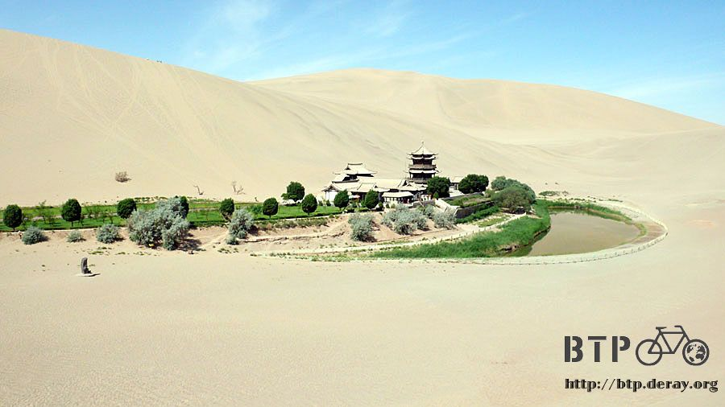
但是被人發現之後，如預料中的，很快的就被破壞殆盡、草枯沙荒，八零年代才重新挖泉，
大興土木作復原的動作，並新蓋了很多建築，成了如今的樣子，真嚴格要說的話，這已經不是當初的月牙泉，但起碼還能給人留下一點回憶。

月牙泉的面積很小，泉水更淺，好像過兩天就會乾掉的感覺，但在人工的養護下，這種事情是不會發生的。
附近不遠就有一個人工泉，兩邊相通，隨時都可以作泉水的補給，所以此景將會永遠的被保留下去。

泉的周圍長滿了『七星草』，號稱可以催生壯陽~_~，泉裡有『鐵背魚』，號稱可以治疑難雜症。
應該就是這種奇怪的號稱讓二十幾年前月牙泉一度瀕臨消失吧。
我繞著泉走一圈，現在都用柵欄圍起來了，定睛仔細看著泉水，還真的有魚在游泳，這是後來放生的還是真的那麼厲害存活下來的~_~
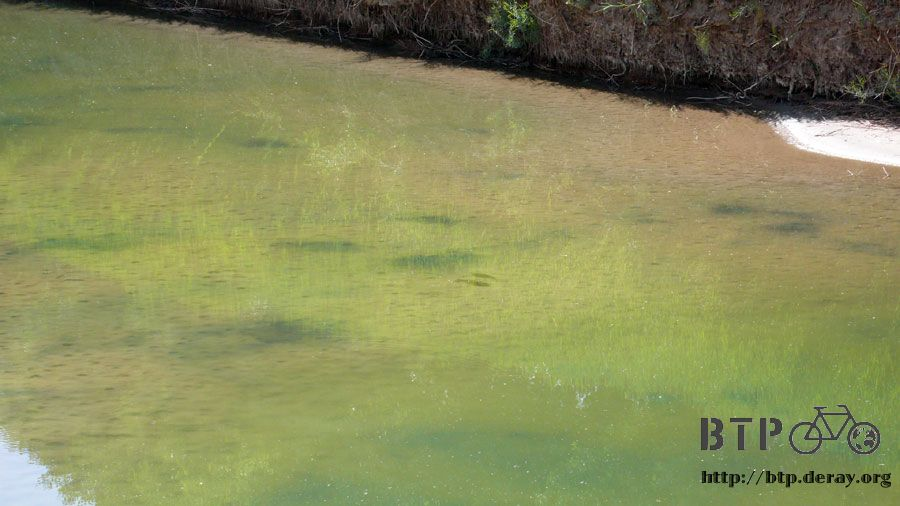
鳴沙山那邊是細細碎碎的小沙子，月牙泉這裡有一片都是比較粗顆粒的沙，顏色也不像沙漠那樣單調的淺咖啡色，
而有著漂亮的顏色，俗稱『五色沙』，入口處明白的寫著禁止攜帶玻璃容器入內，目的應該就是為了保存這些五色沙。
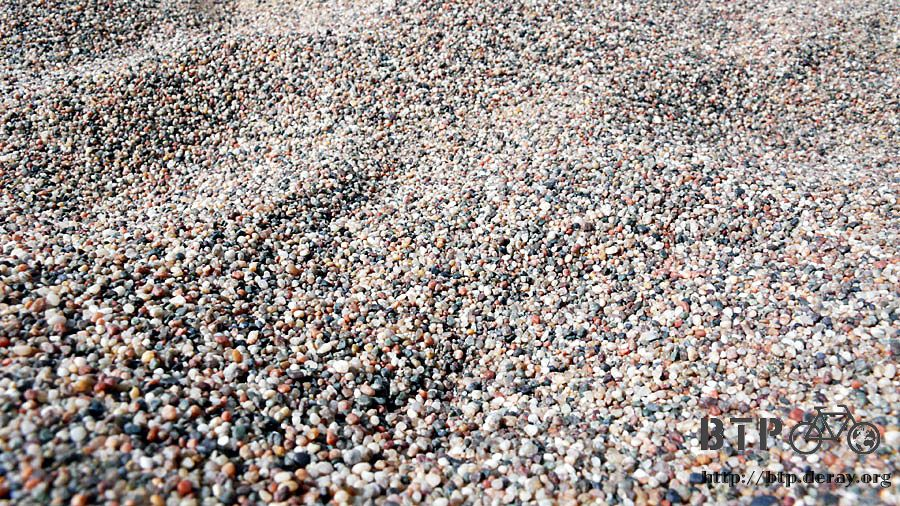
但是觀光客還是用喝光的飲料瓶、塑膠袋，任何能裝沙子的東西，大把大把的帶回去，沙漠會不會有被觀光客搬光的一天呢？
圍繞的月牙泉的都是超級高的沙丘，不知道為什麼就是不會塌下來，
用我自己當比例尺，就知道這個沙丘到底有多高聳多巨大。

我請稷財幫我拍這張照片，'當我用大字型躺在沙漠上，他則一直在遠方跟我揮手，我只好起身跑過去他那邊，問他怎麼回事？
『你跑的太遠了，人只剩下一丁點，根本就看不見呀。』
『沒關係，這不是要拍我，我想拍的是沙漠，只要可以拍到我的人形就可以了。』說完再重新狂奔兩百公尺到沙漠裡。
月牙泉的周邊長了許多的植物，都是長在沙子裡面，那本打開的書就是介紹這一顆樹的歷史。
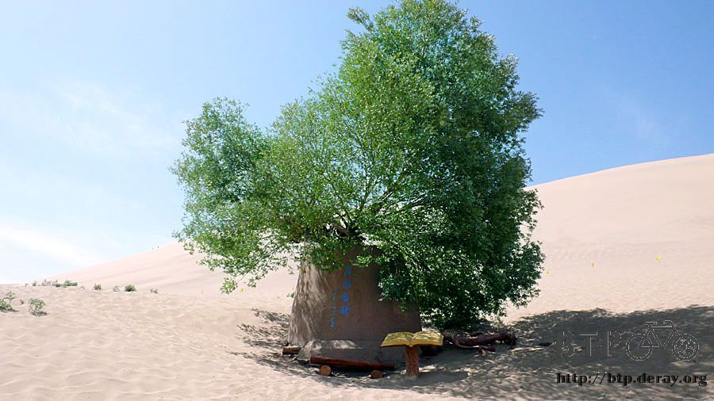
有的還會開花，這麼惡劣的生長環境真是不容易。
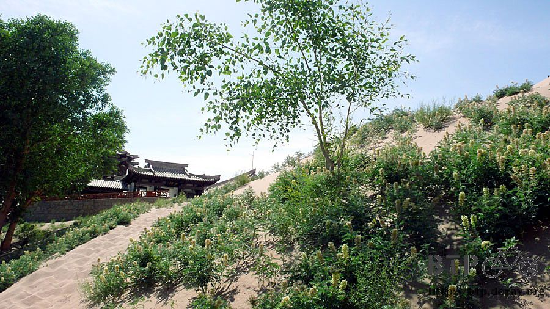
小小樹的告示牌，用三種語言寫著『保護環境』。

沿著泉走，從不同的角度看看這個美景，真是很感激沒有觀光客的地方，照片裡不會出現一堆的閒雜人影。

離開月牙泉之後，騎著駱駝回去山門，正好是中午十二點，今天的觀光就算結束了，準備吃午餐。
問了一下稷財喝不喝酒？邀他一起去吃午餐順便喝兩杯。
由他介紹，在附近的小餐廳吃『驢肉黃麵』，喝著冰涼的西涼啤酒，今天真是多謝他幫我導覽一整個上午。
少少的十塊錢小費、一瓶飲料、一瓶啤酒和一盤炒麵，只是物質上的些許回報，更多的是我無盡的感激這位青海朋友的友善。
吃完麵後稷財又要回去工作，握手向他告別，有緣的話會再見面的，誰知道將來會怎麼樣呢？
稍微休息一下，憑著鳴沙山的票根，可以免費參觀這邊的民俗博物館。
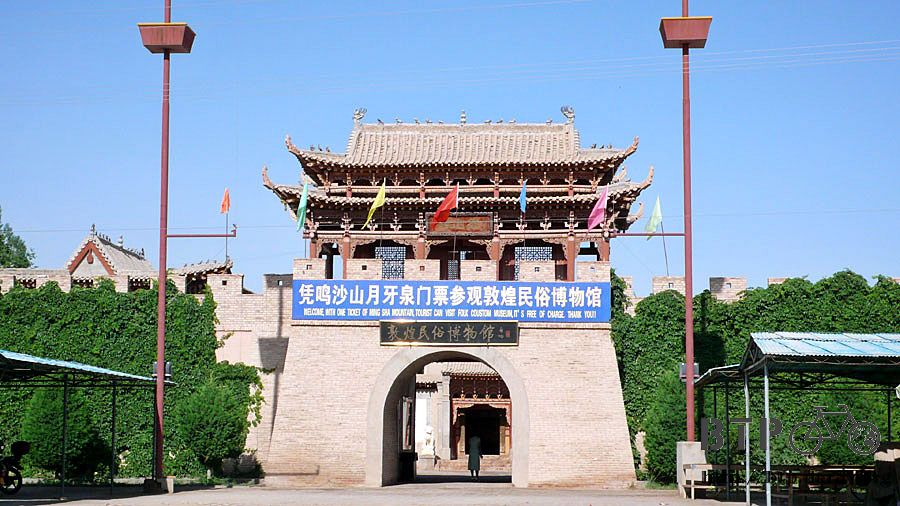
我本來以為這邊是小販聚集的地方，假借博物館的名號作生意，但沒想到這裡真的是博物館，而且是很生活的那種。
一進去就是古代有錢人家的大庭大院格局，裡面展示了很多以前人生活的樣貌，

從臥室、壽堂、廚房、書房，都保存的很好，還有敦煌的歷史介紹，原來這裡曾經因為嘉峪關封關，而與中原斷絕了長達兩百年的來往，
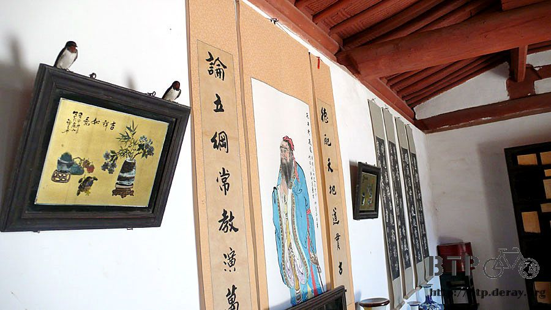
這兩百年來就是敦煌自治發展，又因地處偏遠，所以文化上都遠遠落後中原地區，可是如今看來敦煌一點都不像個小地方。

看著畫像介紹敦煌史上的有名人物和簡歷，每幅畫都畫的很有特色，像是漫畫那樣生動，而非寫真那樣呆板。
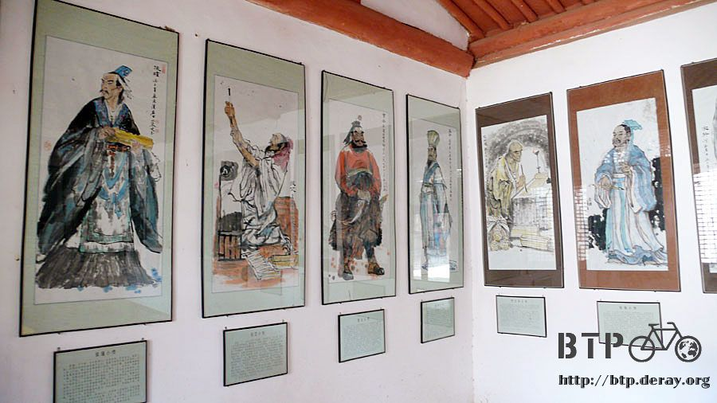
瀏覽完博物館之後，今天的遊覽就差不多告一段落了，準備搭公交車回市區。
坐在車上等車開的時候，發現司機不見了，打開窗戶看到他在樹下拿著竿子打樹上的果子。
我就跑過去看他賣力演出，腳底下的蒲公英種子已經準備好要旅行了～

司機大叔忙了好一會之後，終於滿意的跑回車上，順便遞了一粒給我『杏子，吃不？』
吃，怎麼不吃，咬一口綠綠的杏子，好酸喔>"<但還蠻好吃的。
今天是在敦煌休息的弟二天，下午之後那種騎車的疲憊感終於逐漸消散。
圍繞在我身邊的鬼魂們都昇天去了吧～
在敦煌只待了兩天，就花了五百多塊人民幣，這是平常可以花十天以上的生活費，燒錢燒的有點誇張，但我已經盡可能的節省了。
為了怕接下來的旅行現金不夠用，所以拿著提款卡去街上領錢，看到提款機就試一下，結果不是不接受此卡，就是無法領錢。
出國前才辦了國際提款的功能，這樣子我就不用帶一堆現金和旅行支票這麼麻煩，只要有提款機，我就可以以當日的匯率領出當地貨幣使用。
雖然很方便，可是如果沒找到有國際提款功能的提款機，那我手上這一張提款卡也派不上用場。
沿路提領現金，好像在盜領別人的錢一樣，但是我在領的是自己的救命旅費呀>"<
中國的銀行真是多，應該不比台灣少間，後來找到一間中國銀行，想必和台灣銀行一樣，是國家企業吧。
試了提款機，第一次選中文介面，提款失敗，再試一次換選英文介面，就成功了領到了紅通通的鈔票，錢暫時就不需要煩惱了。
中國銀行裡面不知道為什麼擺了體重計，既然有那我就去量一下體重。
旅行一個多月，餐餐都吃美食，卻也沒胖，天天都騎百來公里單車，倒也沒瘦，體重持平、身體健康。
晚餐在很喧鬧的敦煌夜市找好吃的，看到張掖的地方小吃，炒搓魚子，先問一下什麼是搓魚子。
原來是一種麵食，將麵搓的短短的，長度約兩～三公分，兩頭略尖，配上蘆筍、茄子等青菜去炒，有點辣但味道還不錯。
因為麵很短，所以用筷子很難夾的起來，可以吃很久，用湯匙吃會比較容易一些。
散步在人行街，看到好久不見的烤玉米，是東北的黏玉米，先用水煮熟然後再用炭火烤，
吃起來質地很軟，因為沒有塗佐醬料，所以就是玉米香甜的原味，一根是三元。
由於目前的進度超前兩天，本來計畫是今天我才會抵達敦煌，所以進度很不趕，可以悠哉的旅行。
回招待所之後，跟員工說我要多住一晚上，『敦煌我還沒玩夠呢～』
繼續閱讀：5.29 虛假的古城
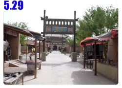
中國-人民幣－ 1：4.3 台幣
5.28 |
總計：233.5元 |
早餐牛肉麵加肉5.5元、公交車往返市區<->鳴沙山2元、鳴沙山‧月牙泉門票80元、騎駱駝60元、租防砂鞋套10元、竹板滑沙10元、給稷財的小費10元、飲料兩瓶4元、啤酒兩瓶8元、驢肉黃麵5元、住店30元、晚餐炒搓魚子6元、烤東北黏玉米3元 |
|